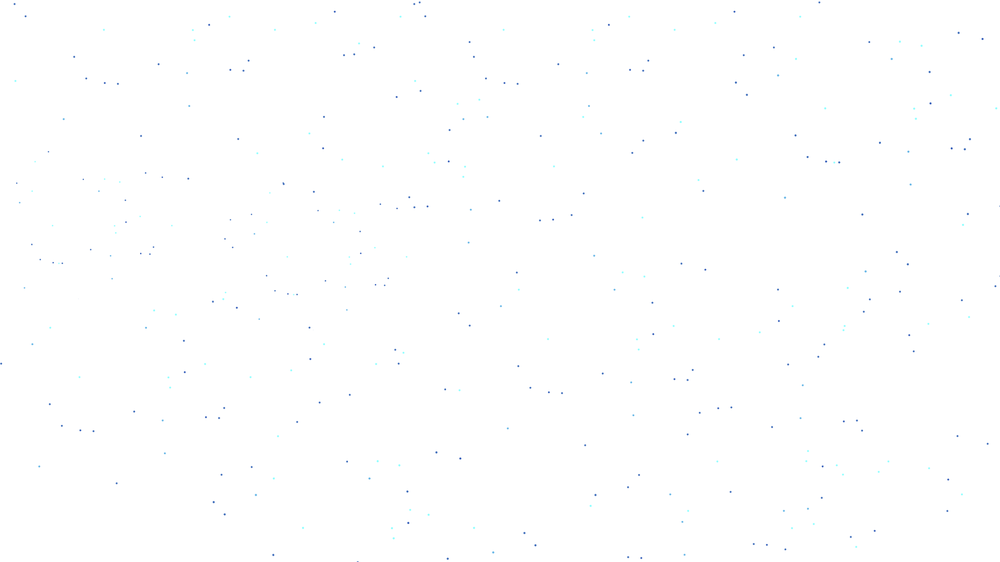
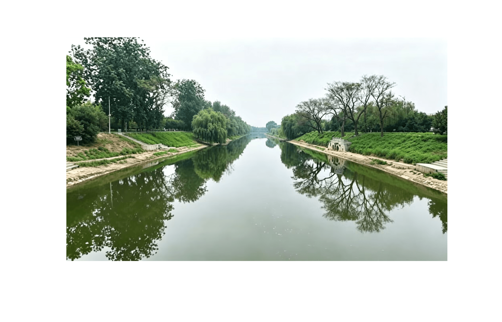
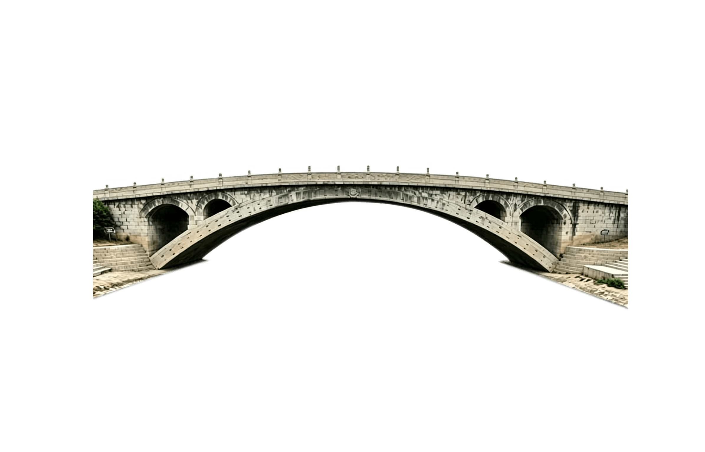
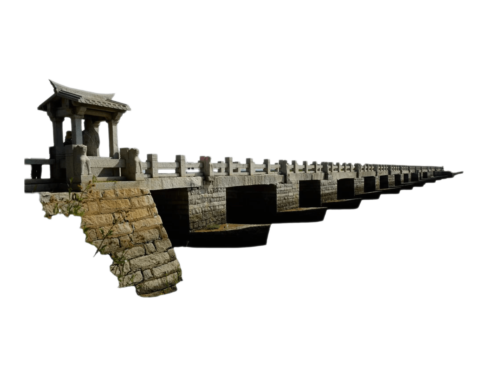

蛟龙穿岩
点击翻转查看详情
赵州桥两侧栏板雕刻“蛟龙穿岩”，龙身穿过岩层，呈现强烈的透视感与动态美。
✨ 点击任意空白处关闭 ✨



这个网站通过三维模型拆解赵州桥与洛阳桥的结构奥秘，结合AI桥梁专家实时讲解两座古桥千年不倒的力学原理，从拱形承压到筏形基础，从牡蛎固基到柔性连接，用现代科技语言完整翻译古代工匠的直觉智慧，让访客在交互探索中真正理解中国古桥的超时代智慧。

赵州桥两侧栏板雕刻“蛟龙穿岩”，龙身穿过岩层，呈现强烈的透视感与动态美。
点击进入沉浸式 3D 模型，探索古桥结构奥秘
立即体验 →| 功能 | 隋唐宋 (595-1279) | 元明清 (1271-1911) | 近现代 (1912-1990) | 当代 (1991-至今) |
|---|---|---|---|---|
| 🚗 交通 | 南北要道 | 持续通行 | 公路辅桥 | 文旅展示 |
| ⚔️ 军事 | 战略通道 | 军事要冲 | — | — |
| 💰 经济 | 商贸枢纽 | 民间通道 | 区域联通 | 文旅经济 |
| 📜 文化 | 城市标志 | 文人题咏 | 建筑研究 | 世界遗产 |
| 对比项 | 赵州桥（隋） | 欧洲同类桥 | 领先时间 |
|---|---|---|---|
| 敞肩拱首创 | 605年 | 法国夏特奈桥（14世纪） | 约700年 |
| 空腹式设计 | 隋代 | 意大利弗拉塔桥（1449年） | 约840年 |